Technos : C++11 Qt5 OpenGL SSE PortAudio KissFFT
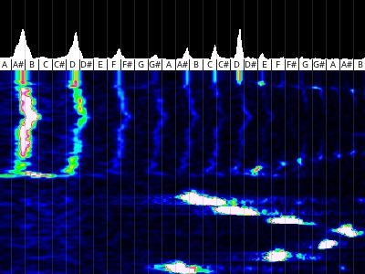 Projet de jeu vidéo musical. Deux modes prévus : un où l’on doit chanter ou siffler le plus juste possible avec du feedback en temps réel avec l’aide d’un spectrogramme, l’autre plus orienté collaboration musicale pour faire des jams et des compositions communes (inspiré par Plink)
Technos : HTML jQuery MySQL Bootstrap
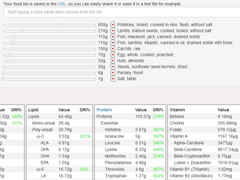 Application permettant d’ajuster son régime alimentaire en fonction des AJR. Il devient aisé d’ajuster les quantités des nourritures les plus intéressantes afin d’obtenir l’un des meilleur compromis.
Technos : HTML NodeJS CoffeeScript Jade Bootstrap
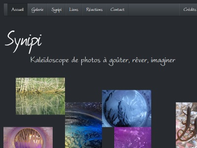 Site vitrine de photos macros sans retouches avec un style très particulier stimulant l’imaginatif. Dans un esprit de liberté et d’autonomie, il possède la particularité technique d’être auto-hébergé sur un PC basse consommation (EeeBox) tournant sous Ubuntu.
Technos : HTML PHP JavaScript SQL CSS
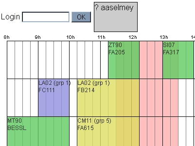 Application permettant aux élèves de l’UTC d’échanger leurs créneaux de TD/TP en trouvant automatiquement les autres élèves ayant un emploi du temps compatible. Il est également possible d’afficher l’emploi du temps de plusieurs élèves en parallèle pour faciliter la mise en place de réunions de projets.
Technos : haXe NME Nape
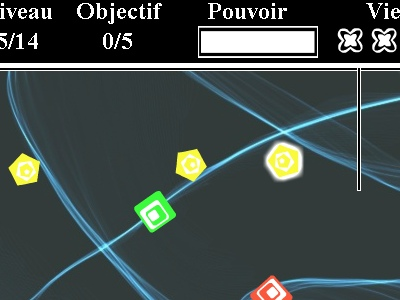 Jeu d’adresse et de rapidité à la souris réalisé en trinôme dans le cadre de l’UV IC06 à l’UTC. Le thème de départ était de faire un jeu « abstrait », ce qui nous a fait penser à des formes géométriques auxquelles on a par la suite rajouté de l’interaction (forces d’attraction et de répulsion).
Technos : HTML JavaScript jQuery CSS
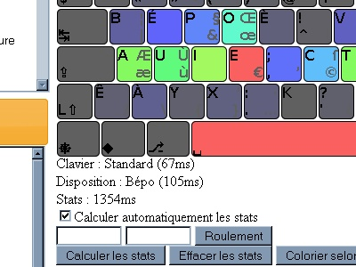 Outil d’analyse et de comparaison de dispositions clavier qui permet notamment de voir l’impact des changements de la disposition physique des touches. On peut donc mieux se rendre compte des avantages des dispositions et des claviers ergonomiques tels que le TypeMatrix ou le Bépo.
Technos : AS3 Flash Box2D
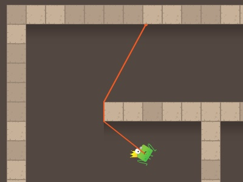 Prototype de jeu réalisé pendant mon stage chez Adictiz. Le gameplay est une reprise du concept de la corde ninja du jeu Worms Armageddon. Quelques éléments notables : système de replay, génération aléatoire de niveaux.
Technos : C++ Qt
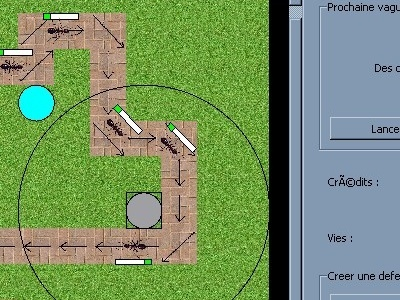 Projet de jeu réalisé en binôme dans le cadre de l’UV LO21 à l’UTC. Le gameplay est une simple reprise du célèbre genre de jeu de Tower defense où des ennemis suivant un certain chemin arrivent par vagues. L’élément clef est de placer des tourelles le plus judicieusement possible.
Technos : AS3 Flex
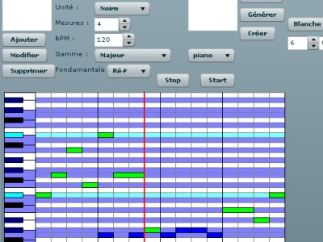 Projet d’application de composition et de génération de mélodies pseudo-aléatoires réalisé en binôme dans le cadre de la deuxième année d’IUT. Avec le recul, la difficulté majeure est de trouver un moyen pour rendre l’application à la fois simple et intuitive comme la première version, mais tout en permettant plus de richesse et de strucutre comme la dernière version.
Technos : AS3 Flex
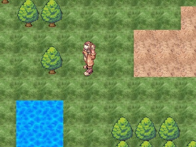 Projet trop ambitieux de jeu vidéo de type MMORTS, qui n’a finalement aboutit qu’en un prototype de génération aléatoire de terrain en utilisant l’algorithme du Bruit de Perlin. Il y a également une animation de sprite du personnage et une gestion de collision basique.
Technos : AS3 Flex SQL
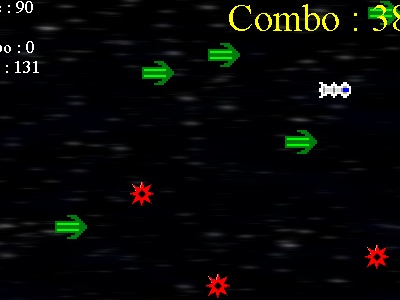 Mini-jeu d’adresse et de rapidité à la souris sans grande prétention. Il possède néanmoins une base de données de high score et un effet de flou selon la vitesse. C’est surtout un de mes premiers jeux à être suffisamment complet pour être jouable.
Technos : HTML PHP SQL
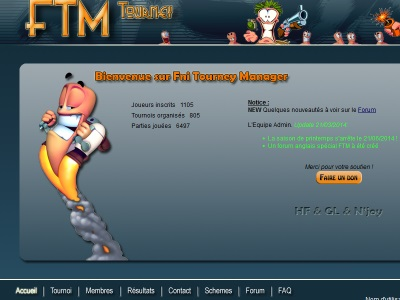 Site web communautaire servant à faciliter l’organisation de tournois sur le jeu Worms Armageddon. Les arbres de tournois sont générés automatiquement en fonction du nombre de joueurs inscrits. Des statistiques et un classement des joueurs sont également produits en fonction des résultats.
Technos : C ASM WinAPI
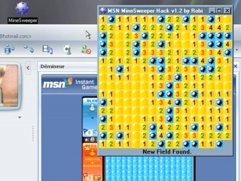 Petit programme permettant de tricher au démineur de MSN. C’était surtout un challenge pour rendre automatique ce que l’on pouvait faire manuellement avec un logiciel comme CheatEngine. Le procédé consiste à aller modifier un bout de code assembleur de la DLL du jeu qui est chargée dans le processus de MSN et ainsi pouvoir récupérer les informations du plateau de jeu.